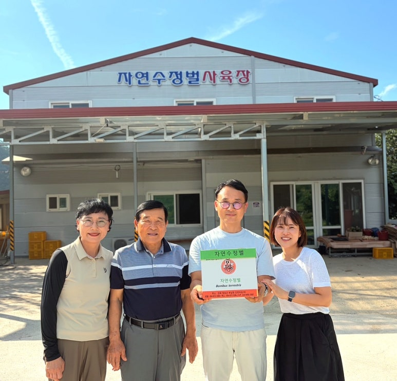

LET’S GROW TOGETHER
우리 농장의 이야기를
들려주세요.
작물과 수량, 투입 일정이 고민이라면
알고 계신 재배 조건부터 상담을 준비해 보세요.
FOR YOUR FARM
상담에 필요한 내용을
한번에 정리해요.
모르는 항목은 비워두어도 괜찮습니다. 작물과 농장 조건을 적어두면 구매 전 상담을 시작하기 편합니다.
작성한 내용은 이 화면에서만 정리됩니다. 아래 버튼으로 상담 내용을 준비한 후, 복사하여 상담 채널에 직접 보내주세요.
FROM OUR CHANNELS
소식과 안내를
한곳에서 만나세요.
실제 현장 사진과 영상은 각 공식 원문에서 확인할 수 있습니다.